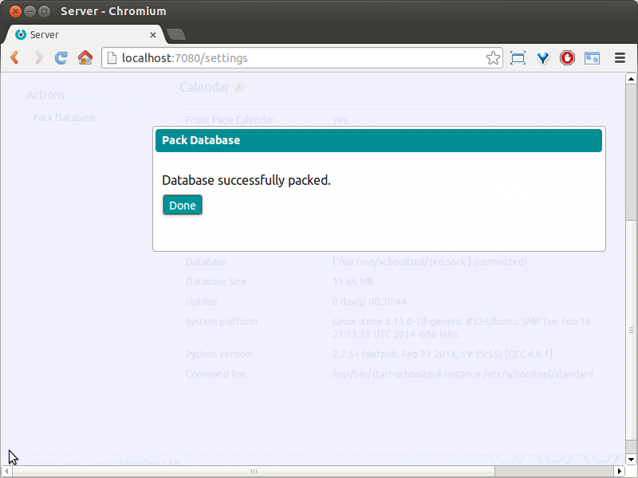

Basic Database Administration¶
Unlike most web applications, SchoolTool does not use a relational database such as MySQL or PostgreSQL. Instead, it uses ZODB – the Zope Object Database. ZODB has some specific characteristics a SchoolTool site manager should be aware of.
The main drawback to this, from the point of view of a school’s systems administrator or programmer, is that you cannot simply directly access data in the form of raw tables. It has to be done programmatically in Python, either from a module in the main server application, or an external Python script that imports much of SchoolTool’s object model.
If you have specific needs for data reporting, don’t hesitate to contact us.
Where is the data?¶
All the data in a given SchoolTool instance is stored in a file named Data.fs. On an Ubuntu system this file can be found in the /var/lib/schooltool/ directory. The additional files in that directory ending with .index, .lock, and .tmp are all used by the application in various ways, but they do not contain any data about your school which is not also included in the main Data.fs file.
Photos, reports, and other binary files are stored outside the Data.fs database in a blobs directory.
Automatic backups¶
Whenever SchoolTool is updated to a new version via Ubuntu’s update mechanisms, it creates a backup of the current database. It also compresses and retains previous backups. The most recent back up in /var/lib/schooltool/ has a .0 appended, like schooltool/Data.fs.0. Older backups are also gzipped, with increasing numbers as suffixes. schooltool/Data.fs.2.gz is older than schooltool/Data.fs.1.gz, for example.
How do I do a manual backup?¶
Backing up and restoring SchoolTool’s database is done using a script called
repozo. It supports incremental backup, “hot” backups of a live database
while the SchoolTool service is running, and is included with the Ubuntu packages.
To perfom a hot incremental backup on the standard default Ubuntu package configuration is:
sudo repozo -B -v -r /path/to/backup -f /var/lib/schooltool/Data.fs
Where “/path/to/backup” is the actually path to the directory where you want the backups to be stored.
This will result in a set of timestamped backups that look like this (this is after several incremental backups):
2014-06-06-12-51-02.dat 2014-06-06-16-01-02.index
2014-06-06-12-51-02.fs 2014-06-08-16-01-02.deltafs
2014-06-06-12-51-02.index 2014-06-08-16-01-02.index
2014-06-06-14-01-02.deltafs 2014-06-10-20-01-02.deltafs
2014-06-06-14-01-02.index 2014-06-10-20-01-02.index
You want these backups to be stored as far away from the original database files as possible, at least on a different drive, ideally at a completely different facility.
You can and should set this up as a scheduled cron job. For example,
on Ubuntu you can simply create a file (as root) named schooltool-repozo in the
/etc/cron.daily directory containing a this text:
#!/bin/sh
repozo -B -v -r /path/to/backup -f /var/lib/schooltool/Data.fs >/dev/null
This will run once a day automatically. More documentation on using cron
is available online or in standard Unix reference books.
You also must back up the /var/lib/schooltool/blobs directory. This
directory contains image files, generated pdf reports and other binary files.
It can be backed up like any regular file directory.
Restoring from a backup¶
First, stop SchoolTool:
sudo service schooltool stop
To restore the database from your backup directory back into
/var/lib/schooltool, the command would be:
sudo repozo -R -v -r /path/to/backup -o /var/lib/schooltool/Data.fs
You will also need to copy or restore your backed up contents of the blobs
directory.
Then, restart SchoolTool:
sudo service schooltool start
Running repozo --help in a terminal will return full documentation of
repozo’s flags and options.
What if My Database is Empty After an Upgrade?¶
If something goes awry during the backup process, it is possible that your current database will be moved into the first backup position (ending with .0), but a blank database will be in the “current” Data.fs position:
sudo mv /var/lib/schooltool/Data.fs.0 /var/lib/schooltool/Data.fs
How can I erase the entire database?¶
Delete the Data.fs file and the blobs directory. This is, of course, permanent. If there is the slightest chance you’ll ever want that data, moving rather than deleting the files is advisable.
Packing the database.¶
The ZODB is designed to keep a record of transactions, which can be used by an application to allow “undo” functionality. One implication of this, however, is that the database file grows in size as it stores a longer and longer list of changes to each object. To shrink the database back to a more efficient size, one can “pack” it. Because SchoolTool does not allow you to undo transactions, there is no practical reason not to pack the database.
Packing the database does not have to be done very frequently – certainly not daily. Monthly or weekly should suffice, but your mileage may vary depending on the intensity of usage. It may be something you do prior to high demand periods, such as before teachers submit grades. Backing up your database prior to packing it should not be necessary, but nonetheless it is not a bad idea.
To pack the database via the web, you must be logged in as a member of “Site Managers.” Navigate to the Server tab at the top of the page, then click on Actions: Pack Database. You will see a spinner indicating that packing is in progress. If you stay on the page, you will get a confirmation dialog:

You can also run zeopack to pack the database from the terminal. The
complete usage for the standard install is:
sudo zeopack localhost:7081
Depending on your site’s database usage, this process could take several minutes and put a load on the server, so plan to pack the database at an off-peak time.
You can also use a cron job to run zeopack weekly or monthly.